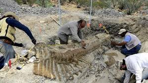

Contacte.
Sóc un paleontòleg apassionat per l’estudi dels dinosaures i la divulgació científica.
- Nom: Dr. Fòssil Juràssic
- Professió: Paleontòleg
- Experiència: 10 anys d’excavacions
- 1842 – Richard Owen: crea el terme Dinosauria.
- 1861 – Archaeopteryx: fòssil amb plomes, clau per entendre l’origen de les aus.
- 1969 – Deinonychus: canvia la visió dels dinosaures, actius i àgils.

Museu
Tornar a la pàgina principal.